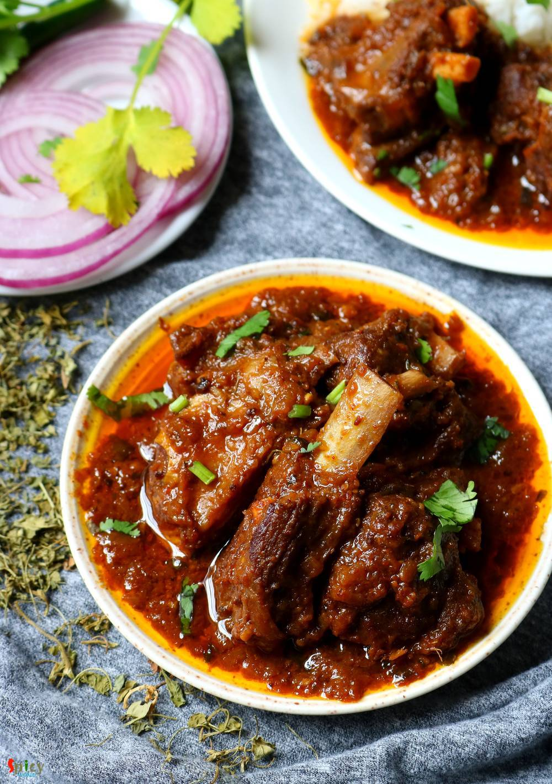

Simple and Easy Recipes
Punjabi Mutton Curry
© 2016 Spicy World, Published on: Jun 19, 2019
Most of the Punjabi curries call for three important ingredients - freshly ground Garam Masala powder, Kasuri methi (dry fenugreek leaves) and Ghee (clarified butter). These ingredients make their curries very flavorful and tasty. Rest of the process is simple, marinated mutton will be cooked in onion tomato gravy. This punjabi mutton curry goes best with plain chapati (Indian flatbread) or rice. Do give this recipe a try and let me know how it turned out for you.

Ingredients
- 500 grams of mutton.
- 2 medium onion, chopped.
- 2 Tablespoons of ginger garlic paste.
- Puree of 1 tomato.
- 1 Tablespoon of red chili powder.
- 1 Tablespoon of turmeric powder.
- Whole spices (3 Tablespoons of coriander seeds, 2 Tablespoons of cumin seeds, 4 dry red chilies, 1 Tablespoon of black peppercorns, 4 green cardamom, 3 cloves, 2 small cinnamon sticks, 1 mace).
- 2 Tablespoons of yogurt.
- 1 Tablespoon of dry fenugreek leaves.
- 1 Tablespoon of ghee or clarified butter.
- 1/4th cup of mustard oil.
- Half cup of water.
- Salt and sugar as per your taste.


Steps
Dry roast the whole spices in a pan for 4-5 minutes on medium flame.
Grind them to a fine powder.
This is the punjabi garam masala powder.
Marinate the mutton with half of the masala, turmeric powder, red chili powder, ginger garlic paste and yogurt.
Keep aside for 4-5 hours.
Heat mustard oil in a pan.
Fry chopped onion until golden brown in color.
Then add marinated mutton, fry for 5 minutes on high flame.
Next add tomato puree, salt and little sugar. Mix well and cook for 10 minutes on medium flame.
Mutton will release lot of juices, cook 10 more minutes in its own juices.
In a pressure cooker, add only the mutton pieces (not the entire masala) and half cup of water. Cook until 4-5 whistles come or mutton becomes soft.
Put the soft mutton with water in the masala again. Mix well and cook on high flame until the gravy becomes thick.
Lastly add dry fenugreek leaves, little garam masala powder and ghee. Mix well and turn off the heat.
Your Punjabi Mutton Curry is ready to serve.
Serve this hot with chapati or rice.
")